Selected Publications
† First Author | * Corresponding Author


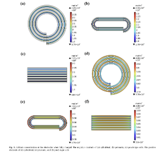
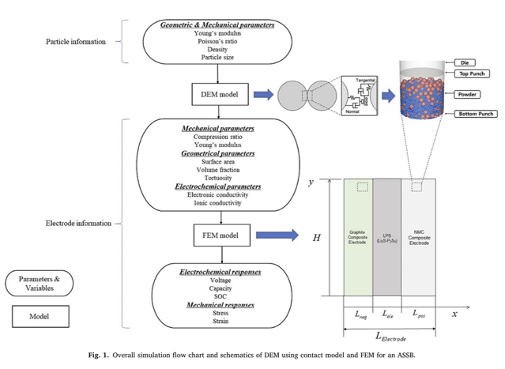
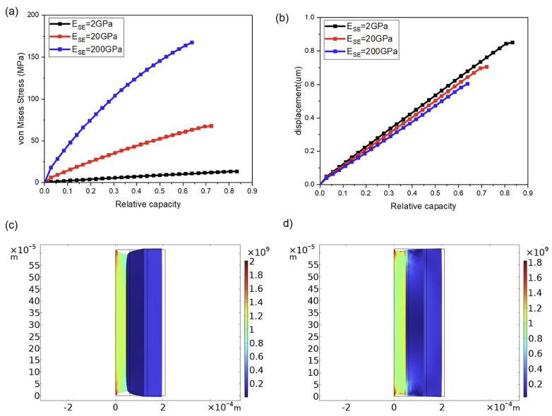
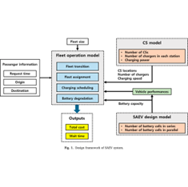
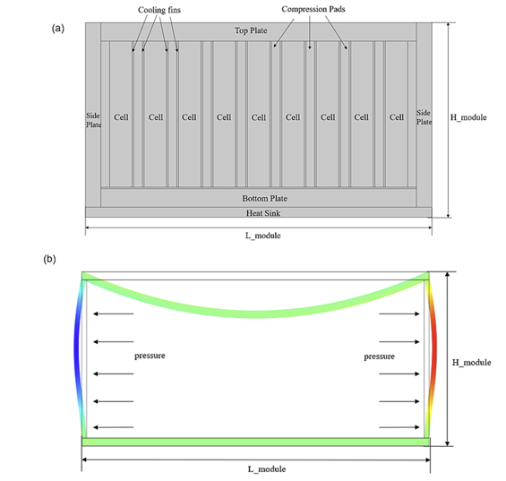
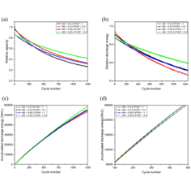
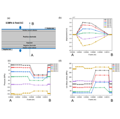
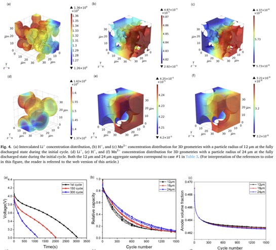
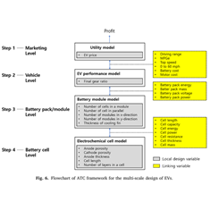
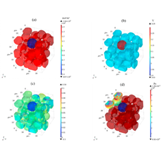
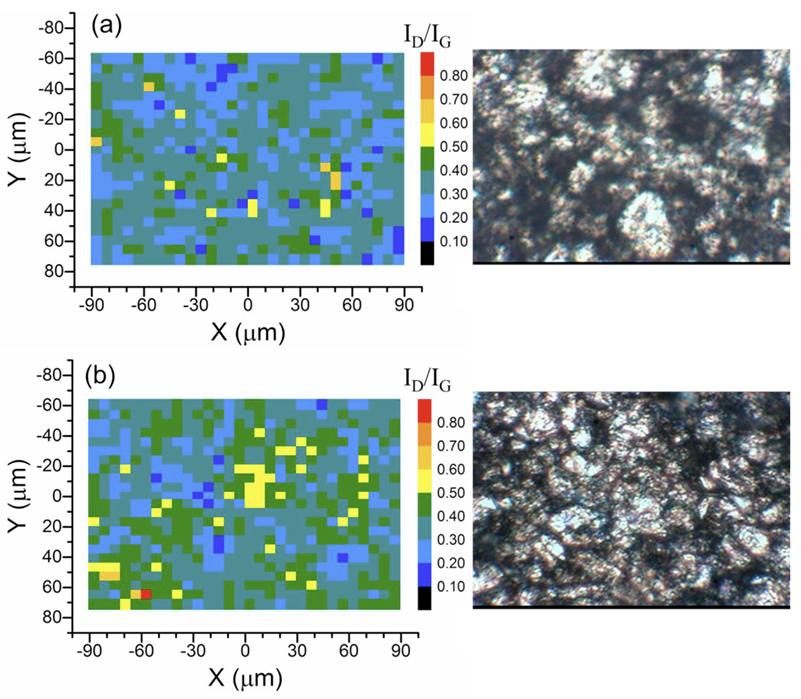
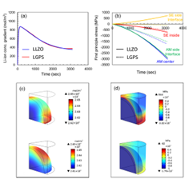
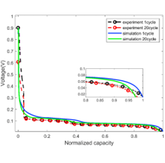
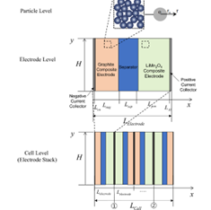
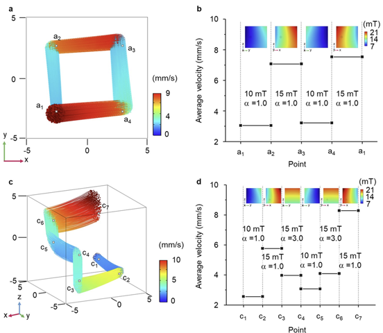
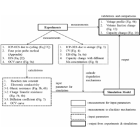
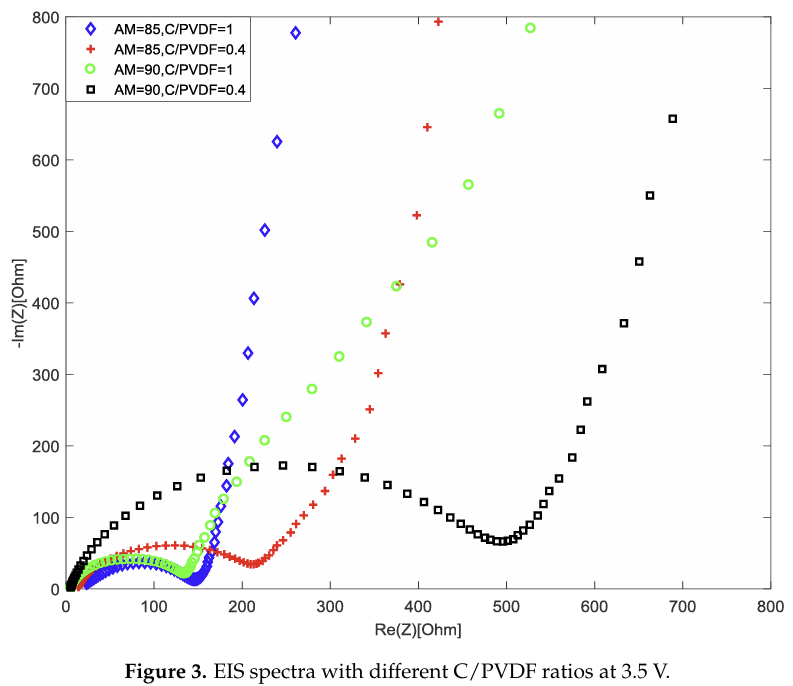
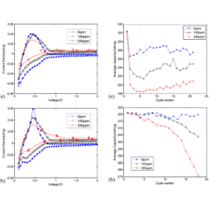
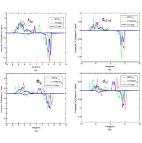
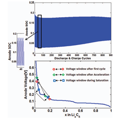
No publications available for 2026 yet.
No publications available for 2020.
Patents & Applications
Total 301 Patents and Patent Applications
(As of 2025.10.16)
81 Korean Patents (75 Registered) &
220 Foreign Patents (154 Registered)
Among them, 52 patents are
Triad Patent Families
(registered in 3 major players — US, JP, EP)
Selected Registered / Industrial Patents
[133]
[2025] 전기차 실제 환경 주행 성능 시뮬레이팅 시스템 및 그 동작 방법
[KR] 출원 1020250138080 (2025.09.24)
[132]
[2025] 냉각부재를 구비한 배터리 모듈 및 배터리 팩 및 전력 저장장치
[KR] 출원 1020250077612 (2025.06.13)
[131]
[2025] 부반응의 반응속도 조절을 통해 가속화된 리튬이온 배터리의 열화 예측 방법 및 이를 이용한 예측 시스템 및 컴퓨터 판독 가능 기록매체
[KR] 출원 1020250076896 (2025.06.12)
[130]
[2025] Battery Module, Battery Pack Including Same Battery Module, and Automobile Including Same Battery Pack
[US] 출원 19049602 (2025.02.10)
[129]
[2025] BATTERY MODULE INCLUDING COOLING MEMBER, AND BATTERY PACK AND ENERGY STORAGE SYSTEM INCLUDING THE SAME
[US] 출원 19008066 (2025.01.02)
[128]
[2024] BATTERY MODULE, AND BATTERY RACK AND POWER STORAGE DEVICE COMPRISING BATTERY MODULE
[US] 출원 18952062 (2024.11.19)
[127]
[2024] BATTERY MODULE INCLUDING COOLING MEMBER, AND BATTERY PACK AND ENERGY STORAGE SYSTEM INCLUDING THE SAME
[US] 출원 18920394 (2024.10.18)
[126]
[2024] 배터리 모듈, 이러한 배터리 모듈을 포함하는 배터리 랙 및 전력 저장 장치
[KR] 출원 1020240136006 (2024.10.07) | 등록 1028519230000 (2025.08.25)
[125]
[2024] 폐전지로부터의 금속 회수 방법 및 시스템
[KR] 출원 1020240069591 (2024.05.28) | 등록 1028371110000 (2025.07.17)
[124]
[2024] Battery module including base plate having gas discharge passage, and battery pack and energy storage system including the same
[US] 출원 18668963 (2024.05.20) | 등록 12355090 (2025.07.08)
[123]
[2024] Battery module having swelling gauge, and battery pack comprising same
[US] 출원 18657302 (2024.05.07) | 등록 12368203 (2025.07.22)
[122]
[2024] Battery module including cooling member, and battery pack and energy storage system including the same
[US] 출원 18639727 (2024.04.18) | 등록 12155052 (2024.11.26)
[121]
[2024] Battery module, battery pack including same battery module, and automobile including same battery pack
[US] 출원 18402240 (2024.01.02) | 등록 12261326 (2025.03.25)
[120]
[2023] Battery module, battery rack comprising same, and power storage device
[US] 출원 18505866 (2023.11.09) | 등록 12341218 (2025.06.24)
[119]
[2023] Battery Module Having Improved Cooling Structure
[US] 출원 18372864 (2023.09.26)
[118]
[2023] BATTERY MODULE, AND BATTERY PACK AND VEHICLE COMPRISING THE SAME
[US] 출원 18213832 (2023.06.24)
[117]
[2023] BATTERY MODULE HAVING SIMPLE SENSING STRUCTURE
[US] 출원 18115669 (2023.02.28)
[116]
[2023] Reusable pouch type secondary battery, battery module comprising the same and method of reusing battery module
[US] 출원 18113780 (2023.02.24) | 등록 12062751 (2024.08.13)
[115]
[2023] 미세구조를 갖는 리튬 이차전지용 양극 활물질 및 활물질의 미세구조를 이용하여 전지의 성능을 예측하는 방법
[KR] 출원 1020230017430 (2023.02.09)
[114]
[2023] Battery module housing having easily reusable recyclable, and reworkable adhesion structure and battery module comprising same
[US] 출원 18166274 (2023.02.08) | 등록 12176504 (2024.12.24)
[113]
[2022] BATTERY PACK
[US] 출원 18080544 (2022.12.13)
[112]
[2022] Battery module, battery pack including same battery module, and automobile including same battery pack
[US] 출원 17978676 (2022.11.01) | 등록 11923562 (2024.03.05)
[111]
[2022] Reusable pouch type secondary battery, battery module comprising the same and method of reusing battery module
[US] 출원 17741767 (2022.05.11) | 등록 11616250 (2023.03.28)
[110]
[2021] BATTERY MODULE INCLUDING GAS CUTOFF STRUCTURE
[US] 출원 17794396 (2021.02.26)
[EP] 출원 21780259.4 (2021.02.26)
[JP] 출원 34530287 (2021.02.26) | 등록 07317233 (2023.07.20)
[EP] 출원 21780259.4 (2021.02.26)
[JP] 출원 34530287 (2021.02.26) | 등록 07317233 (2023.07.20)
[109]
[2021] Battery module, and battery pack and vehicle comprising the same
[US] 출원 17173183 (2021.02.10) | 등록 11728531 (2023.08.15)
[108]
[2020] Battery Module, And Battery Pack And Vehicle Comprising Same Battery Module
[US] 출원 17773413 (2020.11.11) | 등록 12315956 (2025.05.27)
[EP] 출원 20895104.6 (2020.11.11)
[JP] 출원 34510196 (2020.11.11) | 등록 07372447 (2023.10.23)
[EP] 출원 20895104.6 (2020.11.11)
[JP] 출원 34510196 (2020.11.11) | 등록 07372447 (2023.10.23)
[107]
[2020] Battery module, and battery rack and power storage device comprising battery module
[US] 출원 17424993 (2020.10.19) | 등록 12176569 (2024.12.24)
[EP] 출원 20880582.0 (2020.10.19)
[JP] 출원 33540565 (2020.10.19) | 등록 07252347 (2023.03.27)
[EP] 출원 20880582.0 (2020.10.19)
[JP] 출원 33540565 (2020.10.19) | 등록 07252347 (2023.03.27)
[106]
[2020] Battery module, and battery rack and power storage device, each comprising same battery module
[US] 출원 17639147 (2020.09.02) | 등록 12294070 (2025.05.06)
[EP] 출원 20869563.5 (2020.09.02)
[JP] 출원 34504270 (2020.09.02) | 등록 07379657 (2023.11.06)
[EP] 출원 20869563.5 (2020.09.02)
[JP] 출원 34504270 (2020.09.02) | 등록 07379657 (2023.11.06)
[105]
[2020] BATTERY MODULE, BATTERY PACK, AND VEHICLE
[US] 출원 17628703 (2020.08.20)
[EP] 출원 20892908.3 (2020.08.20)
[JP] 출원 34509691 (2020.08.20) | 등록 07366236 (2023.10.12)
[EP] 출원 20892908.3 (2020.08.20)
[JP] 출원 34509691 (2020.08.20) | 등록 07366236 (2023.10.12)
[104]
[2020] BATTERY MODULE
[US] 출원 17782372 (2020.08.19)
[EP] 출원 20902383.7 (2020.08.19) | 등록 04033593 (2024.10.02)
[JP] 출원 34514233 (2020.08.19) | 등록 07416917 (2024.01.09)
[EP] 출원 20902383.7 (2020.08.19) | 등록 04033593 (2024.10.02)
[JP] 출원 34514233 (2020.08.19) | 등록 07416917 (2024.01.09)
[103]
[2020] Battery Pack and Vehicle Comprising Battery Pack
[US] 출원 17623711 (2020.08.03)
[EP] 출원 20850728.5 (2020.08.03) | 등록 03989337 (2024.10.02)
[JP] 출원 34502154 (2020.08.03) | 등록 07334326 (2023.08.18)
[EP] 출원 20850728.5 (2020.08.03) | 등록 03989337 (2024.10.02)
[JP] 출원 34502154 (2020.08.03) | 등록 07334326 (2023.08.18)
[102]
[2020] Battery module system comprising external short-circuit device and cooling device
[US] 출원 17625469 (2020.07.06) | 등록 12040510 (2024.07.16)
[EP] 출원 20837840.6 (2020.07.06)
[JP] 출원 33570507 (2020.07.06) | 등록 07412452 (2023.12.28)
[EP] 출원 20837840.6 (2020.07.06)
[JP] 출원 33570507 (2020.07.06) | 등록 07412452 (2023.12.28)
[101]
[2020] Battery module, battery rack comprising same, and power storage device
[US] 출원 17431388 (2020.06.23) | 등록 11870094 (2024.01.09)
[EP] 출원 20834689.0 (2020.06.23) | 등록 03965220 (2024.04.24)
[JP] 출원 33557060 (2020.06.23) | 등록 07268188 (2023.04.24)
[EP] 출원 20834689.0 (2020.06.23) | 등록 03965220 (2024.04.24)
[JP] 출원 33557060 (2020.06.23) | 등록 07268188 (2023.04.24)
[100]
[2020] Battery pack with energy drain resistor for preventing fire propagation
[US] 출원 17298261 (2020.06.04) | 등록 11764447 (2023.09.19)
[EP] 출원 20851714.4 (2020.06.04) | 등록 03958341 (2025.04.23)
[JP] 출원 33529022 (2020.06.04) | 등록 07186876 (2022.12.01)
[EP] 출원 20851714.4 (2020.06.04) | 등록 03958341 (2025.04.23)
[JP] 출원 33529022 (2020.06.04) | 등록 07186876 (2022.12.01)
[99]
[2020] Battery module including base plate having gas discharge passage, and battery pack and energy storage system including the same
[US] 출원 17294562 (2020.05.27) | 등록 12015165 (2024.06.18)
[EP] 출원 20827285.6 (2020.05.27) | 등록 03905426 (2024.03.13)
[JP] 출원 33530228 (2020.05.27) | 등록 07170872 (2022.11.04)
[EP] 출원 20827285.6 (2020.05.27) | 등록 03905426 (2024.03.13)
[JP] 출원 33530228 (2020.05.27) | 등록 07170872 (2022.11.04)
[98]
[2020] BATTERY RACK AND POWER STORAGE DEVICE COMPRISING SAME
[US] 출원 17298375 (2020.05.12) | 등록 12002938 (2024.06.04)
[EP] 출원 20818712.0 (2020.05.12) | 등록 03905375 (2025.09.10)
[JP] 출원 33545772 (2020.05.12) | 등록 07308961 (2023.07.06)
[EP] 출원 20818712.0 (2020.05.12) | 등록 03905375 (2025.09.10)
[JP] 출원 33545772 (2020.05.12) | 등록 07308961 (2023.07.06)
[97]
[2020] 가스 차단 구조체를 포함하는 전지모듈
[KR] 출원 1020200039868 (2020.04.01) | 등록 1028145660000 (2025.05.26)
[96]
[2020] Battery cell, and battery module, battery rack and energy storage system including the same
[US] 출원 16979600 (2020.01.20) | 등록 11962020 (2024.04.16)
[EP] 출원 20759125.6 (2020.01.20)
[JP] 출원 32548960 (2020.01.20) | 등록 07090725 (2022.06.16)
[EP] 출원 20759125.6 (2020.01.20)
[JP] 출원 32548960 (2020.01.20) | 등록 07090725 (2022.06.16)
[95]
[2020] Battery module with swelling gauge and battery pack including same
[CN] 출원 202010015039.6 (2020.01.07)
[94]
[2019] Battery module having swelling gauge, and battery pack comprising same
[US] 출원 17281140 (2019.12.20) | 등록 12027715 (2024.07.02)
[EP] 출원 19908315.5 (2019.12.20) | 등록 03893319 (2024.10.02)
[JP] 출원 33514082 (2019.12.20) | 등록 07046268 (2022.03.24)
[EP] 출원 19908315.5 (2019.12.20) | 등록 03893319 (2024.10.02)
[JP] 출원 33514082 (2019.12.20) | 등록 07046268 (2022.03.24)
[93]
[2019] 배터리 모듈
[KR] 출원 1020190169535 (2019.12.18)
[92]
[2019] 배터리 모듈, 이러한 배터리 모듈을 포함하는 배터리 팩 및 자동차
[KR] 출원 1020190161962 (2019.12.06) | 등록 1027865230000 (2025.03.20)
[91]
[2019] 배터리 모듈
[KR] 출원 1020190152649 (2019.11.25)
[90]
[2019] Battery pack and vehicle comprising same battery pack
[US] 출원 17260751 (2019.11.07) | 등록 12183936 (2024.12.31)
[EP] 출원 19899079.8 (2019.11.07) | 등록 03848995 (2024.09.18)
[EP] 출원 19899079.8 (2019.11.07) | 등록 03848995 (2024.09.18)
[89]
[2019] 배터리 모듈, 이러한 배터리 모듈을 포함하는 배터리 랙 및 전력 저장 장치
[KR] 출원 1020190136956 (2019.10.30) | 등록 1027735890000 (2025.02.21)
[88]
[2019] 배터리 모듈 및 이러한 배터리 모듈을 포함하는 배터리 랙 및 전력 저장 장치
[KR] 출원 1020190117415 (2019.09.24) | 등록 1027990120000 (2025.04.17)
[87]
[2019] Battery module including heat-shrinkable tube
[US] 출원 16769479 (2019.08.26) | 등록 11594780 (2023.02.28)
[EP] 출원 19860740.0 (2019.08.26)
[JP] 출원 32536141 (2019.08.26) | 등록 07062196 (2022.04.22)
[CN] 출원 201980006840.X (2019.08.26)
[EP] 출원 19860740.0 (2019.08.26)
[JP] 출원 32536141 (2019.08.26) | 등록 07062196 (2022.04.22)
[CN] 출원 201980006840.X (2019.08.26)
[86]
[2019] 연쇄발화 방지를 위한 에너지 드레인 저항체를 구비한 배터리 팩
[KR] 출원 1020190097677 (2019.08.09) | 등록 1027664960000 (2025.02.06)
[85]
[2019] 배터리 팩 및 이러한 배터리 팩을 포함하는 자동차
[KR] 출원 1020190094572 (2019.08.02) | 등록 1028199180000 (2025.06.09)
[84]
[2019] 외부 단락 장치 및 냉각 장치를 구비하는 배터리 모듈 시스템
[KR] 출원 1020190082289 (2019.07.08) | 등록 1028259060000 (2025.06.23)
[83]
[2019] Battery module, battery pack comprising same battery module, and vehicle comprising same battery pack
[KR] 출원 1020190080195 (2019.07.03) | 등록 1027489830000 (2024.12.26)
[US] 출원 16759067 (2019.07.03) | 등록 11456502 (2022.09.27)
[EP] 출원 19830344.8 (2019.07.03) | 등록 03731302 (2023.12.13)
[JP] 출원 32524307 (2019.07.03) | 등록 07083897 (2022.06.03)
[CN] 출원 201980006172.0 (2019.07.03)
[US] 출원 16759067 (2019.07.03) | 등록 11456502 (2022.09.27)
[EP] 출원 19830344.8 (2019.07.03) | 등록 03731302 (2023.12.13)
[JP] 출원 32524307 (2019.07.03) | 등록 07083897 (2022.06.03)
[CN] 출원 201980006172.0 (2019.07.03)
[82]
[2019] 가스배출통로를 구비한 베이스 플레이트를 포함한 배터리 모듈 및 배터리 팩 및 전력 저장장치
[KR] 출원 1020190071733 (2019.06.17) | 등록 1027511110000 (2025.01.02)
[81]
[2019] 배터리 랙 및 이를 포함하는 전력 저장 장치
[KR] 출원 1020190066645 (2019.06.05) | 등록 1027439010000 (2024.12.12)
[80]
[2019] Battery module having improved cooling structure
[US] 출원 16767457 (2019.03.08) | 등록 11811040 (2023.11.07)
[EP] 출원 19814466.9 (2019.03.08) | 등록 03716392 (2025.07.23)
[JP] 출원 32528094 (2019.03.08) | 등록 07082665 (2022.05.31)
[CN] 출원 201980005785.2 (2019.03.08)
[EP] 출원 19814466.9 (2019.03.08) | 등록 03716392 (2025.07.23)
[JP] 출원 32528094 (2019.03.08) | 등록 07082665 (2022.05.31)
[CN] 출원 201980005785.2 (2019.03.08)
[79]
[2019] Battery module, battery pack including battery module, and vehicle including battery pack
[KR] 출원 1020190018662 (2019.02.18) | 등록 1024554710000 (2022.10.12)
[US] 출원 16622076 (2019.02.18) | 등록 11114710 (2021.09.07)
[EP] 출원 19772159.0 (2019.02.18) | 등록 03675274 (2023.04.05)
[JP] 출원 32518385 (2019.02.18) | 등록 07045571 (2022.03.24)
[US] 출원 16622076 (2019.02.18) | 등록 11114710 (2021.09.07)
[EP] 출원 19772159.0 (2019.02.18) | 등록 03675274 (2023.04.05)
[JP] 출원 32518385 (2019.02.18) | 등록 07045571 (2022.03.24)
[78]
[2019] Battery module, battery pack including same battery module, and automobile including same battery pack
[US] 출원 16629793 (2019.02.13) | 등록 11522246 (2022.12.06)
[EP] 출원 24184816.7 (2019.02.13) | 등록 04447193 (2025.04.02)
[JP] 출원 31571294 (2019.02.13) | 등록 07045592 (2022.03.24)
[CN] 출원 201980003932.2 (2019.02.13)
[EP] 출원 24184816.7 (2019.02.13) | 등록 04447193 (2025.04.02)
[JP] 출원 31571294 (2019.02.13) | 등록 07045592 (2022.03.24)
[CN] 출원 201980003932.2 (2019.02.13)
[77]
[2019] 스웰링 게이지를 구비한 배터리 모듈 및 이를 포함하는 배터리 팩
[KR] 출원 1020190002470 (2019.01.08) | 등록 1022981050000 (2021.08.30)
[76]
[2018] 배터리 팩 및 이러한 배터리 팩을 포함하는 자동차
[KR] 출원 1020180164610 (2018.12.18) | 등록 1025447850000 (2023.06.13)
[75]
[2018] Battery module housing having easily reusable, recyclable, and reworkable adhesion structure and battery module comprising same
[US] 출원 16625453 (2018.12.14) | 등록 11611125 (2023.03.21)
[EP] 출원 18901341.0 (2018.12.14) | 등록 03644398 (2025.06.18)
[JP] 출원 31566688 (2018.12.14) | 등록 07038944 (2022.03.11)
[CN] 출원 201880051027.X (2018.12.14)
[EP] 출원 18901341.0 (2018.12.14) | 등록 03644398 (2025.06.18)
[JP] 출원 31566688 (2018.12.14) | 등록 07038944 (2022.03.11)
[CN] 출원 201880051027.X (2018.12.14)
[74]
[2018] Battery module having improved cooling structure
[US] 출원 16618534 (2018.12.05) | 등록 11264668 (2022.03.01)
[EP] 출원 18897735.9 (2018.12.05) | 등록 03671946 (2023.04.26)
[JP] 출원 31568612 (2018.12.05) | 등록 07045605 (2022.03.24)
[CN] 출원 201880040567.8 (2018.12.05)
[EP] 출원 18897735.9 (2018.12.05) | 등록 03671946 (2023.04.26)
[JP] 출원 31568612 (2018.12.05) | 등록 07045605 (2022.03.24)
[CN] 출원 201880040567.8 (2018.12.05)
[73]
[2018] Battery pack and method of manufacturing the same
[US] 출원 16618993 (2018.11.30) | 등록 11302982 (2022.04.12)
[EP] 출원 18895603.1 (2018.11.30) | 등록 03627584 (2023.11.22)
[CN] 출원 201880042584.5 (2018.11.30)
[EP] 출원 18895603.1 (2018.11.30) | 등록 03627584 (2023.11.22)
[CN] 출원 201880042584.5 (2018.11.30)
[72]
[2018] Battery module, and battery pack and vehicle comprising same
[US] 출원 16625414 (2018.11.28) | 등록 11196120 (2021.12.07)
[EP] 출원 18890647.3 (2018.11.28)
[JP] 출원 31566694 (2018.11.28) | 등록 07045566 (2022.03.24)
[CN] 출원 201880045180.1 (2018.11.28)
[EP] 출원 18890647.3 (2018.11.28)
[JP] 출원 31566694 (2018.11.28) | 등록 07045566 (2022.03.24)
[CN] 출원 201880045180.1 (2018.11.28)
[71]
[2018] Battery module including sensing assembly and bus bar assembly
[US] 출원 16621322 (2018.11.06) | 등록 11830974 (2023.11.28)
[EP] 출원 18879472.1 (2018.11.06) | 등록 03671937 (2024.06.12)
[JP] 출원 31569669 (2018.11.06) | 등록 07045568 (2022.03.24)
[CN] 출원 201880044845.7 (2018.11.06)
[EP] 출원 18879472.1 (2018.11.06) | 등록 03671937 (2024.06.12)
[JP] 출원 31569669 (2018.11.06) | 등록 07045568 (2022.03.24)
[CN] 출원 201880044845.7 (2018.11.06)
[70]
[2018] Battery module comprising bus bar assembly
[US] 출원 16620266 (2018.10.31) | 등록 11223092 (2022.01.11)
[EP] 출원 18873468.5 (2018.10.31) | 등록 03671901 (2025.08.13)
[JP] 출원 31569667 (2018.10.31) | 등록 07047218 (2022.03.28)
[CN] 출원 201880046951.9 (2018.10.31)
[EP] 출원 18873468.5 (2018.10.31) | 등록 03671901 (2025.08.13)
[JP] 출원 31569667 (2018.10.31) | 등록 07047218 (2022.03.28)
[CN] 출원 201880046951.9 (2018.10.31)
[69]
[2018] 폐전지로부터의 금속 회수 방법 및 시스템
[KR] 출원 1020180124716 (2018.10.18) | 등록 1026714850000 (2024.05.28)
[68]
[2018] Battery module having bus bar assembly
[US] 출원 16620385 (2018.10.11) | 등록 11289776 (2022.03.29)
[EP] 출원 18884722.2 (2018.10.11) | 등록 03671902 (2025.05.21)
[JP] 출원 31564425 (2018.10.11) | 등록 07045590 (2022.03.24)
[CN] 출원 201880036534.6 (2018.10.11)
[EP] 출원 18884722.2 (2018.10.11) | 등록 03671902 (2025.05.21)
[JP] 출원 31564425 (2018.10.11) | 등록 07045590 (2022.03.24)
[CN] 출원 201880036534.6 (2018.10.11)
[67]
[2018] 열수축성 튜브를 포함하는 배터리 모듈
[KR] 출원 1020180109834 (2018.09.13) | 등록 1024244000000 (2022.07.19)
[66]
[2018] Battery module, battery pack and vehicle including the same
[US] 출원 16339583 (2018.07.12) | 등록 11349172 (2022.05.31)
[EP] 출원 18835416.1 (2018.07.12) | 등록 03522255 (2023.08.30)
[JP] 출원 31528766 (2018.07.12) | 등록 07034415 (2022.03.04)
[EP] 출원 18835416.1 (2018.07.12) | 등록 03522255 (2023.08.30)
[JP] 출원 31528766 (2018.07.12) | 등록 07034415 (2022.03.04)
[65]
[2018] 배터리 모듈, 이러한 배터리 모듈을 포함하는 배터리 팩 및 이러한 배터리 팩을 포함하는 자동차
[KR] 출원 1020180077300 (2018.07.03) | 등록 1022554870000 (2021.05.17)
[64]
[2018] 개선된 냉각 구조를 갖는 배터리 모듈
[KR] 출원 1020180066302 (2018.06.08) | 등록 1023723480000 (2022.03.03)
[63]
[2018] Battery module
[US] 출원 16341236 (2018.05.28) | 등록 11437660 (2022.09.06)
[EP] 출원 18817606.9 (2018.05.28) | 등록 03550661 (2025.07.02)
[JP] 출원 31538381 (2018.05.28) | 등록 07034417 (2022.03.04)
[CN] 출원 201880006339.9 (2018.05.28)
[EP] 출원 18817606.9 (2018.05.28) | 등록 03550661 (2025.07.02)
[JP] 출원 31538381 (2018.05.28) | 등록 07034417 (2022.03.04)
[CN] 출원 201880006339.9 (2018.05.28)
[62]
[2018] Battery module
[US] 출원 15980242 (2018.05.15) | 등록 10665834 (2020.05.26)
[61]
[2018] Battery module, battery pack including battery module, and vehicle including battery pack
[US] 출원 16461167 (2018.04.13) | 등록 11456500 (2022.09.27)
[EP] 출원 18791497.3 (2018.04.13) | 등록 03567669 (2020.12.23)
[JP] 출원 31531137 (2018.04.13) | 등록 07062164 (2022.04.22)
[CN] 출원 201880004896.7 (2018.04.13)
[EP] 출원 18791497.3 (2018.04.13) | 등록 03567669 (2020.12.23)
[JP] 출원 31531137 (2018.04.13) | 등록 07062164 (2022.04.22)
[CN] 출원 201880004896.7 (2018.04.13)
[60]
[2018] Battery Pack and electric vehicle including same
[CN] 출원 201810288520.5 (2018.04.03)
[59]
[2018] Drawer-type battery pack
[US] 출원 16338420 (2018.04.02) | 등록 10992008 (2021.04.27)
[EP] 출원 18784544.1 (2018.04.02) | 등록 03565023 (2022.07.20)
[JP] 출원 31530678 (2018.04.02) | 등록 06801107 (2020.11.27)
[EP] 출원 18784544.1 (2018.04.02) | 등록 03565023 (2022.07.20)
[JP] 출원 31530678 (2018.04.02) | 등록 06801107 (2020.11.27)
[58]
[2018] Battery pack having crash beam and drain structure
[US] 출원 16349530 (2018.03.26) | 등록 11450913 (2022.09.20)
[EP] 출원 18780297.0 (2018.03.26) | 등록 03573129 (2021.09.01)
[JP] 출원 31524457 (2018.03.26) | 등록 06750117 (2020.08.14)
[EP] 출원 18780297.0 (2018.03.26) | 등록 03573129 (2021.09.01)
[JP] 출원 31524457 (2018.03.26) | 등록 06750117 (2020.08.14)
[57]
[2018] 배터리 모듈, 이러한 배터리 모듈을 포함하는 배터리 팩 및 이러한 배터리 팩을 포함하는 자동차
[KR] 출원 1020180032651 (2018.03.21) | 등록 1022770350000 (2021.07.07)
[56]
[2018] 배터리 모듈, 이러한 배터리 모듈을 포함하는 배터리 팩 및 이러한 배터리 팩을 포함하는 자동차
[KR] 출원 1020180026988 (2018.03.07) | 등록 1022502040000 (2021.05.03)
[55]
[2018] BATTERY MODULE HAVING SIMPLE SENSING STRUCTURE
[US] 출원 16313637 (2018.02.21)
[EP] 출원 18772425.7 (2018.02.21) | 등록 03483980 (2025.06.04)
[JP] 출원 31509536 (2018.02.21) | 등록 06785949 (2020.10.29)
[CN] 출원 201880003040.8 (2018.02.21)
[EP] 출원 18772425.7 (2018.02.21) | 등록 03483980 (2025.06.04)
[JP] 출원 31509536 (2018.02.21) | 등록 06785949 (2020.10.29)
[CN] 출원 201880003040.8 (2018.02.21)
[54]
[2018] Battery pack having crash beam structure
[US] 출원 16349398 (2018.02.19) | 등록 10971770 (2021.04.06)
[EP] 출원 18780817.5 (2018.02.19) | 등록 03534429 (2021.02.17)
[JP] 출원 31527909 (2018.02.19) | 등록 06730526 (2020.07.06)
[CN] 출원 201880004060.7 (2018.02.19)
[EP] 출원 18780817.5 (2018.02.19) | 등록 03534429 (2021.02.17)
[JP] 출원 31527909 (2018.02.19) | 등록 06730526 (2020.07.06)
[CN] 출원 201880004060.7 (2018.02.19)
[53]
[2018] Battery module
[US] 출원 16469368 (2018.02.12) | 등록 11777157 (2023.10.03)
[EP] 출원 18824223.4 (2018.02.12) | 등록 03567670 (2025.08.20)
[JP] 출원 31527905 (2018.02.12) | 등록 06797301 (2020.11.19)
[CN] 출원 201880005180.9 (2018.02.12)
[EP] 출원 18824223.4 (2018.02.12) | 등록 03567670 (2025.08.20)
[JP] 출원 31527905 (2018.02.12) | 등록 06797301 (2020.11.19)
[CN] 출원 201880005180.9 (2018.02.12)
[52]
[2018] 확장형 배터리 모듈 구조를 갖는 배터리 팩
[KR] 출원 1020180011460 (2018.01.30) | 등록 1021629680000 (2020.09.28)
[51]
[2018] Apparatus for predicting deformation of battery module
[US] 출원 16314707 (2018.01.23) | 등록 11561152 (2023.01.24)
[EP] 출원 18743976.5 (2018.01.23) | 등록 03483978 (2023.03.29)
[JP] 출원 31500410 (2018.01.23) | 등록 06751466 (2020.08.18)
[EP] 출원 18743976.5 (2018.01.23) | 등록 03483978 (2023.03.29)
[JP] 출원 31500410 (2018.01.23) | 등록 06751466 (2020.08.18)
[50]
[2018] Battery pack including heat conduction medium with louver fin shape
[KR] 출원 1020180005922 (2018.01.17) | 등록 1022702690000 (2021.06.22)
[US] 출원 16348386 (2018.01.17) | 등록 11133542 (2021.09.28)
[EP] 출원 18780294.7 (2018.01.17) | 등록 03570364 (2020.12.23)
[JP] 출원 31528758 (2018.01.17) | 등록 07037005 (2022.03.08)
[CN] 출원 201880005070.2 (2018.01.17)
[US] 출원 16348386 (2018.01.17) | 등록 11133542 (2021.09.28)
[EP] 출원 18780294.7 (2018.01.17) | 등록 03570364 (2020.12.23)
[JP] 출원 31528758 (2018.01.17) | 등록 07037005 (2022.03.08)
[CN] 출원 201880005070.2 (2018.01.17)
[49]
[2018] Battery charging system for electric vehicle charging station
[KR] 출원 1020180005138 (2018.01.15) | 등록 1021377580000 (2020.07.20)
[US] 출원 16094095 (2018.01.15) | 등록 10807479 (2020.10.20)
[US] 출원 16094095 (2018.01.15) | 등록 10807479 (2020.10.20)
[48]
[2018] Battery pack
[US] 출원 16310539 (2018.01.04) | 등록 11605857 (2023.03.14)
[EP] 출원 18770779.9 (2018.01.04) | 등록 03467903 (2020.07.01)
[JP] 출원 30567851 (2018.01.04) | 등록 06763981 (2020.09.14)
[CN] 출원 201880002808.X (2018.01.04)
[EP] 출원 18770779.9 (2018.01.04) | 등록 03467903 (2020.07.01)
[JP] 출원 30567851 (2018.01.04) | 등록 06763981 (2020.09.14)
[CN] 출원 201880002808.X (2018.01.04)
[47]
[2017] 개선된 냉각 구조를 갖는 배터리 모듈
[KR] 출원 1020170180560 (2017.12.27) | 등록 1022731950000 (2021.06.29)
[46]
[2017] 전지 팩 및 이의 제조 방법
[KR] 출원 1020170180256 (2017.12.26) | 등록 1022419650000 (2021.04.13)
[45]
[2017] 배터리 모듈, 이를 포함하는 배터리 팩 및 자동차
[KR] 출원 1020170176339 (2017.12.20) | 등록 1023195370000 (2021.10.25)
[44]
[2017] 버스바 어셈블리를 구비한 배터리 모듈
[KR] 출원 1020170162867 (2017.11.30) | 등록 1022702660000 (2021.06.22)
[43]
[2017] 센싱 어셈블리 및 버스바 어셈블리를 포함하는 배터리 모듈
[KR] 출원 1020170152984 (2017.11.16) | 등록 1021988480000 (2020.12.29)
[42]
[2017] 버스바 어셈블리를 포함하는 배터리 모듈
[KR] 출원 1020170146496 (2017.11.06) | 등록 1021776940000 (2020.11.05)
[41]
[2017] Battery module having cooling channel, and assembling method and frame assembly thereof
[KR] 출원 1020170125483 (2017.09.27) | 등록 1019715360000 (2019.04.17)
[US] 출원 15781569 (2017.09.27) | 등록 10957949 (2021.03.23)
[EP] 출원 17856749.1 (2017.09.27) | 등록 03382790 (2020.11.04)
[JP] 출원 30538608 (2017.09.27) | 등록 07034411 (2022.03.04)
[CN] 출원 201780005336.9 (2017.09.27)
[US] 출원 15781569 (2017.09.27) | 등록 10957949 (2021.03.23)
[EP] 출원 17856749.1 (2017.09.27) | 등록 03382790 (2020.11.04)
[JP] 출원 30538608 (2017.09.27) | 등록 07034411 (2022.03.04)
[CN] 출원 201780005336.9 (2017.09.27)
[40]
[2017] Battery module, battery pack including battery module, and vehicle including battery pack
[US] 출원 16064196 (2017.07.28) | 등록 10981454 (2021.04.20)
[EP] 출원 17858592.3 (2017.07.28) | 등록 03389113 (2020.03.04)
[JP] 출원 30546855 (2017.07.28) | 등록 06692917 (2020.04.17)
[CN] 출원 201780006509.9 (2017.07.28)
[EP] 출원 17858592.3 (2017.07.28) | 등록 03389113 (2020.03.04)
[JP] 출원 30546855 (2017.07.28) | 등록 06692917 (2020.04.17)
[CN] 출원 201780006509.9 (2017.07.28)
[39]
[2017] 배터리 모듈, 배터리 팩 및 이를 포함하는 자동차
[KR] 출원 1020170091025 (2017.07.18) | 등록 1021713440000 (2020.10.22)
[38]
[2017] 배터리 모듈
[KR] 출원 1020170081353 (2017.06.27) | 등록 1022588160000 (2021.05.25)
[37]
[2017] 배터리 모듈
[KR] 출원 1020170074237 (2017.06.13) | 등록 1021489930000 (2020.08.21)
[36]
[2017] 배터리 팩과 이를 포함하는 자동차
[KR] 출원 1020170069145 (2017.06.02) | 등록 1022588270000 (2021.05.25)
[35]
[2017] 배터리 모듈
[KR] 출원 1020170060564 (2017.05.16) | 등록 1020884770000 (2020.03.06)
[34]
[2017] 배터리 모듈, 이러한 배터리 모듈을 포함하는 배터리 팩 및 이러한 배터리 팩을 포함하는 자동차
[KR] 출원 1020170053845 (2017.04.26) | 등록 1022581740000 (2021.05.24)
[33]
[2017] 재활용 가능한 파우치형 이차전지, 이를 포함하는 배터리 모듈 및 배터리 모듈 재활용 방법
[KR] 출원 1020170052906 (2017.04.25) | 등록 1022588220000 (2021.05.25)
[32]
[2017] 서랍형 배터리 팩
[KR] 출원 1020170048650 (2017.04.14) | 등록 1020651050000 (2020.01.06)
[31]
[2017] 루버 핀 형상의 열전도 매개체를 구비한 배터리 팩
[KR] 출원 1020170044961 (2017.04.06) | 등록 1022560980000 (2021.05.18)
[30]
[2017] Battery module, and battery pack and vehicle comprising the same
[US] 출원 15738376 (2017.04.05) | 등록 11380955 (2022.07.05)
[EP] 출원 17806881.3 (2017.04.05)
[JP] 출원 30525337 (2017.04.05) | 등록 06730431 (2020.07.06)
[CN] 출원 201780002393.1 (2017.04.05)
[EP] 출원 17806881.3 (2017.04.05)
[JP] 출원 30525337 (2017.04.05) | 등록 06730431 (2020.07.06)
[CN] 출원 201780002393.1 (2017.04.05)
[29]
[2017] 크래쉬 빔 구조를 갖는 배터리 팩
[KR] 출원 1020170043911 (2017.04.04) | 등록 1021725170000 (2020.10.26)
[28]
[2017] 배터리 팩
[KR] 출원 1020170036034 (2017.03.22) | 등록 1021105430000 (2020.05.07)
[27]
[2017] 간단한 센싱 구조를 구비하는 배터리 모듈
[KR] 출원 1020170035400 (2017.03.21) | 등록 1021377560000 (2020.07.20)
[26]
[2017] Battery module, and battery pack and vehicle comprising the same
[US] 출원 15743360 (2017.03.16) | 등록 10547037 (2020.01.28)
[EP] 출원 17813466.4 (2017.03.16) | 등록 03349269 (2021.07.14)
[JP] 출원 30517180 (2017.03.16) | 등록 06619090 (2019.11.22)
[CN] 출원 201780003560.4 (2017.03.16)
[EP] 출원 17813466.4 (2017.03.16) | 등록 03349269 (2021.07.14)
[JP] 출원 30517180 (2017.03.16) | 등록 06619090 (2019.11.22)
[CN] 출원 201780003560.4 (2017.03.16)
[25]
[2017] 배터리 모듈 변형 예측 장치
[KR] 출원 1020170011229 (2017.01.24) | 등록 1021926760000 (2020.12.11)
[24]
[2017] Battery pack and vehicle comprising battery pack
[US] 출원 15770706 (2017.01.16) | 등록 10862181 (2020.12.08)
[EP] 출원 17789745.1 (2017.01.16) | 등록 03361555 (2022.06.01)
[JP] 출원 30522053 (2017.01.16) | 등록 06528007 (2019.05.17)
[CN] 출원 201780004016.1 (2017.01.16)
[EP] 출원 17789745.1 (2017.01.16) | 등록 03361555 (2022.06.01)
[JP] 출원 30522053 (2017.01.16) | 등록 06528007 (2019.05.17)
[CN] 출원 201780004016.1 (2017.01.16)
[23]
[2016] Battery module, and battery pack and vehicle comprising the same
[US] 출원 15765664 (2016.12.20) | 등록 10950905 (2021.03.16)
[EP] 출원 16904163.9 (2016.12.20) | 등록 03352291 (2020.05.06)
[JP] 출원 30535803 (2016.12.20) | 등록 06633210 (2019.12.20)
[CN] 출원 201680061220.2 (2016.12.20)
[EP] 출원 16904163.9 (2016.12.20) | 등록 03352291 (2020.05.06)
[JP] 출원 30535803 (2016.12.20) | 등록 06633210 (2019.12.20)
[CN] 출원 201680061220.2 (2016.12.20)
[22]
[2016] 배터리 모듈, 이러한 배터리 모듈을 포함하는 배터리 팩 및 이러한 배터리 팩을 포함하는 자동차
[KR] 출원 1020160129118 (2016.10.06) | 등록 1021029270000 (2020.04.14)
[21]
[2016] 냉각 유로를 구비한 배터리 모듈 및 그 조립방법과 프레임 어셈블리
[KR] 출원 1020160124854 (2016.09.28) | 등록 1021308180000 (2020.06.30)
[20]
[2016] Battery module
[KR] 출원 1020160122320 (2016.09.23) | 등록 1020505300000 (2019.11.25)
[US] 출원 15567184 (2016.09.23) | 등록 10658716 (2020.05.19)
[EP] 출원 16849021.7 (2016.09.23) | 등록 03343691 (2020.04.01)
[JP] 출원 29565912 (2016.09.23) | 등록 06599483 (2019.10.11)
[CN] 출원 201680027427.8 (2016.09.23)
[US] 출원 15567184 (2016.09.23) | 등록 10658716 (2020.05.19)
[EP] 출원 16849021.7 (2016.09.23) | 등록 03343691 (2020.04.01)
[JP] 출원 29565912 (2016.09.23) | 등록 06599483 (2019.10.11)
[CN] 출원 201680027427.8 (2016.09.23)
[19]
[2016] Battery module, battery pack comprising battery module, and vehicle comprising battery pack
[KR] 출원 1020160118085 (2016.09.13) | 등록 1020586900000 (2019.12.17)
[US] 출원 15739053 (2016.09.13) | 등록 10644299 (2020.05.05)
[EP] 출원 16875884.5 (2016.09.13) | 등록 03316341 (2019.04.10)
[JP] 출원 30516561 (2016.09.13) | 등록 06750008 (2020.08.14)
[CN] 출원 201680041235.2 (2016.09.13)
[US] 출원 15739053 (2016.09.13) | 등록 10644299 (2020.05.05)
[EP] 출원 16875884.5 (2016.09.13) | 등록 03316341 (2019.04.10)
[JP] 출원 30516561 (2016.09.13) | 등록 06750008 (2020.08.14)
[CN] 출원 201680041235.2 (2016.09.13)
[18]
[2016] 파우치형 이차전지 및 이를 포함하는 배터리 모듈
[KR] 출원 1020160113900 (2016.09.05) | 등록 1020970840000 (2020.03.30)
[17]
[2016] Battery module having improved cooling structure
[US] 출원 15554305 (2016.09.01) | 등록 11114712 (2021.09.07)
[EP] 출원 16842318.4 (2016.09.01) | 등록 03255722 (2020.03.04)
[JP] 출원 29564634 (2016.09.01) | 등록 06630747 (2019.12.13)
[CN] 출원 201680017183.5 (2016.09.01)
[EP] 출원 16842318.4 (2016.09.01) | 등록 03255722 (2020.03.04)
[JP] 출원 29564634 (2016.09.01) | 등록 06630747 (2019.12.13)
[CN] 출원 201680017183.5 (2016.09.01)
[16]
[2016] 배터리 모듈
[KR] 출원 1020160109284 (2016.08.26) | 등록 1021931660000 (2020.12.14)
[15]
[2016] Battery module, battery pack comprising battery module and vehicle comprising battery pack
[CN] 출원 201610675656.2 (2016.08.16)
[14]
[2016] 냉각 구조가 개선된 배터리 팩
[KR] 출원 1020160101935 (2016.08.10) | 등록 1020751010000 (2020.02.03)
[13]
[2016] Battery pack and vehicle including such battery pack
[US] 출원 15574227 (2016.07.26) | 등록 10497994 (2019.12.03)
[EP] 출원 16862268.6 (2016.07.26) | 등록 03291360 (2019.03.20)
[JP] 출원 30513770 (2016.07.26) | 등록 6560446 (2019.07.26)
[CN] 출원 201680033267.8 (2016.07.26)
[EP] 출원 16862268.6 (2016.07.26) | 등록 03291360 (2019.03.20)
[JP] 출원 30513770 (2016.07.26) | 등록 6560446 (2019.07.26)
[CN] 출원 201680033267.8 (2016.07.26)
[12]
[2016] 배터리 모듈 및 이를 포함하는 배터리 팩, 자동차
[KR] 출원 1020160073360 (2016.06.13) | 등록 1020590770000 (2019.12.18)
[11]
[2016] 방열부재를 구비한 전지모듈
[KR] 출원 1020160070301 (2016.06.07) | 등록 1023202630000 (2021.10.26)
[10]
[2016] 배터리 모듈, 이러한 배터리 모듈을 포함하는 배터리 팩 및 이러한 배터리 팩을 포함하는 자동차
[KR] 출원 1020160067451 (2016.05.31) | 등록 1020917700000 (2020.03.16)
[9]
[2016] 배터리 팩 및 이러한 배터리 팩을 포함하는 자동차
[KR] 출원 1020160050171 (2016.04.25) | 등록 1020617450000 (2019.12.26)
[8]
[2016] 배터리 셀 및 이러한 배터리 셀의 제조 방법
[KR] 출원 1020160022777 (2016.02.25) | 등록 1020841500000 (2020.02.26)
[7]
[2016] 배터리 셀 냉각용 버스바 및 이를 이용한 배터리 모듈
[KR] 출원 1020160016555 (2016.02.12) | 등록 1020187190000 (2019.08.30)
[6]
[2015] 배터리 팩 및 이러한 배터리 팩을 포함하는 자동차
[KR] 출원 1020150153324 (2015.11.02) | 등록 1020505310000 (2019.11.25)
[5]
[2015] 배터리 모듈
[KR] 출원 1020150132992 (2015.09.21) | 등록 1020225900000 (2019.09.10)
[4]
[2015] 배터리 모듈
[KR] 출원 1020150126427 (2015.09.07) | 등록 1020581940000 (2019.12.16)
[3]
[2015] 전해액 함침 장치 및 시스템
[KR] 출원 1020150125728 (2015.09.04) | 등록 1020237210000 (2019.09.16)
[2]
[2015] 향상된 냉각구조를 갖는 배터리 모듈
[KR] 출원 1020150124382 (2015.09.02) | 등록 1020651020000 (2020.01.06)
[1]
[2015] 배터리 모듈, 배터리 모듈을 포함하는 배터리 팩 및 배터리 팩을 포함하는 자동차
[KR] 출원 1020150115533 (2015.08.17) | 등록 1019905900000 (2019.06.12)
Domestic & International Conference
[62]
Distributional Reinforcement Learning-Based Inparing for EV Battery Cooling Channel Design Optimization
[61]
Design of Optimal Fast Charging Protocol Accounting for Temperature and Lithium Plating of Lithium-ion Batteries
[60]
Kalman Filter–Based Algorithm Development for Estimating the State-of-Temperature of NCA Lithium-Ion Battery Cells
[59]
Development of a Battery-in-the-Loop System-Based Real-World Driving Scenario Simulator for Electric Vehicles
[58]
Comparative Study of Isolated and Non-isolated Converter-based Active Cell Balancing Topologies for Lithium-ion Batteries
[57]
Electrochemical Behavior Analysis of 2D Lithium-Metal Batteries under Passive Cell Balancing Circuits
[56]
Development of a Data-Driven Electrochemical-Thermal Coupling Model for Thermal Response Analysis of an 18650 Cylindrical Lithium-Ion Cell
[55]
Development of an Electrochemical–Thermal Coupled Model Reflecting High C-Rate Drone Operating Conditions
[54]
Multiphysics Driven Design of Core–Shell Silicon Anodes for Lithium-Ion Batteries
[53]
Physics-Informed Neural Networks for Battery SoH Estimation with Degradation-Aware Multi-Feature Inputs
[52]
Module-Level Thermal Runaway Propagation Analysis Based on ARC test of a Single Cell
[51]
CRNN-Based Modeling of SOC-Dependent Thermal Runaway Kinetics and Numerical Analysis of Thermal Runaway Propagation
[50]
Phase-Field Analysis of Electrochemically Driven Interfacial Instability in Lithium Deposition
[49]
Electrochemical and Mechanical Impact of Inactive Lithium Layer Growth on Lithium Metal Battery
[48]
Speed Control for Reducing Motor Current Consumption in BEVs under High-Speed Driving: A MATLAB–VISSIM Co-Simulation Study
[47]
Thermal Runaway Characteristics Analysis of Cylindrical Lithium-ion LCO Batteries in an Oven Test Using 3D Simulation
[46]
Development of a cell–vehicle–operations multi-scale design optimization framework for SAEV
[45]
Chemical Reaction Neural Network based DSC Analysis for the Thermal Reaction Mechanism of Li-ion Battery NCM333 Cathode
[44]
Comparative Analysis of Passive, Active Cell Balancing for Cylindrical NCM Battery
[43]
Development of a Battery-in-the-Loop-Based Simulator for Testing Electric Autonomous Vehicles
[42]
Development of a Battery-in-the-Loop System for Battery Performance Testing Under Realistic Driving Environments
[41]
Development of a Battery-in-the-Loop System for Battery Performance Testing Under Realistic Driving Environments
[40]
Electrochemical and Mechanical Impact of Dead Lithium Layer Growth on Lithium Metal Battery
[39]
Multiscale Design Integrated with DFT for Interrelation Electrochemical-Mechanical Behavior of Potassium-Ion Batteries Across Scales
[38]
Phase-Field Modeling of Lithium Dendrite Growth Morphology Depending on Surface Patterning in Li-Metal Batteries
[37]
Development of a Physics-Based Accelerated Degradation Model for Predicting Lithium-Ion Battery Degradation
[36]
Multi-scale, Multi-physics Battery Research for Safe & High-Performance Battery Systems
[35]
Reinforcement learning-based optimal design of cooling channels for batteries in electric vehicles
[34]
Study on irreversible swelling based on battery cell count through experiments and development of predictive models
[33]
Comprehensive analysis of the effect of all-solid-state battery internal structure on performance
[32]
Development of an Accelerated Simulation Model for Predicting Degradation and Optimizing Performance of Lithium-Ion Batteries
[31]
Battery Module Design Optimization for Thermal and Mechanical Safety
[30]
Multi-Scale, Multi-Physics Research for Next-Generation Battery System Design (Invited Presentation)
[29]
Design of high-performance potassium-ion batteries via multiscale approach combined with DFT calculations
[28]
Effects of Mechanical Behavior Between Cells on Electrochemical Performance Based on the Number of Battery Cells
[27]
Effect of inter-particle contact area within the microstructure of all-solid-state batteries on the electrochemical performance
[26]
Impact of Battery Internal Structural Geometry on Battery Performance: A Mechanical–Electrochemical Performance Analysis
[25]
Multi-scale, multi-physics research for next-generation battery system design (Lecture by Young Researchers)
[24]
A comprehensive understanding of electrochemical–mechanical behavior of potassium-ion batteries via multiscale design integrated with DFT calculations
[23]
Multiphysics modeling of the influence of initial pressure on mechanical and electrochemical performance of all-solid-state batteries
[22]
Optimization Study of Mechanical and Thermal Safety in Pouch-Type Lithium-Ion Battery Module Structure Using Reliability-Based Design Optimization (RBDO)
[21]
Analysis of electrochemical performance due to mechanical pressure and deformation between battery cells based on the number of cells and stack orientation
[20]
Microstructure dependent electrochemical performance changes in all-solid-state battery
[19]
Multiscale design of high-performance potassium ion batteries
[18]
Multi-scale research for safe and efficient energy system implementation with batteries
[17]
Validation of performance prediction models for electric vehicle conversion vehicles through vehicle performance testing
[16]
The influence of the microstructure of solid-state batteries on their electrochemical performance
[15]
Electrochemical-mechanical modes for predicting swelling in lithium metal batteries
[14]
Study on the impact of the geometric shape of lithium-ion battery on mechanical and electrochemical performance
[13]
Mechanical deformation and electrochemical performance due to volume expansion of lithium-ion battery cells
[12]
Battery optimal design for performance satisfaction of modified electric vehicles
[11]
Analysis of microstructure geometric effects on electrochemical and stress response of lithium-ion batteries using 3D randomized microstructures
[10]
Modeling study of stress generation and its impact on cell performance of multi-layered electrodes in lithium-ion batteries
[9]
Multiscale design optimization of electric vehicles by analytical target cascading: from battery cell level to marketing level
[8]
A study on multi-scale optimization of electric vehicles
[7]
Prediction of cell performance of electric vehicles with manual transmission
[6]
Multi-scale design and application of lithium-ion battery
[5]
Multi-scale research on electric vehicle batteries
[4]
Multi-physics and multi-scale research of lithium-ion batteries
[3]
Introduction and application of industry convergence curriculum
[2]
A study on degradation modeling of SEI layer contamination by manganese ions in lithium-ion batteries
[1]
Analysis of stress generation and performance characteristics of lithium-ion battery cells using the multiscale structural–electrochemical model